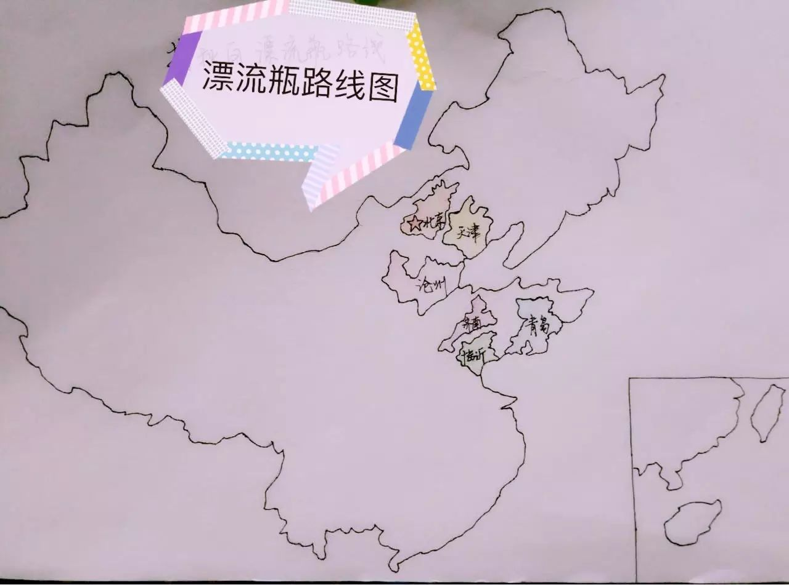
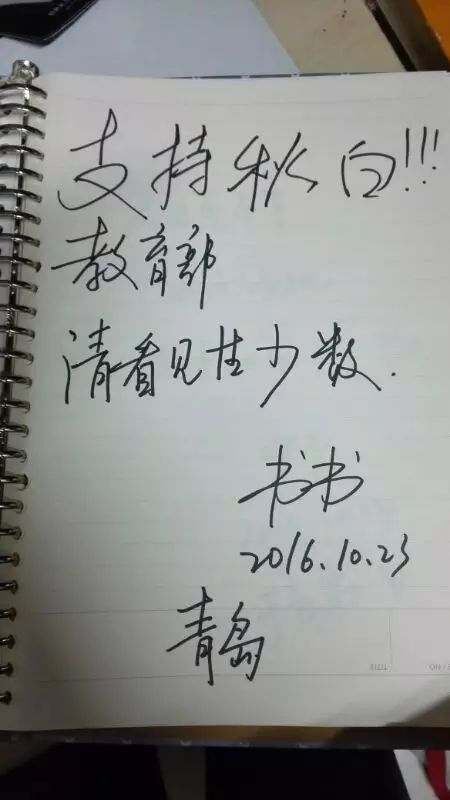

【行动】谁来接力“撑秋白漂流瓶”？
大家好，我是来自山东的“灵澈子”，也是一名男同性恋。

生长于一个传统家庭，在发现自己是gay的那一刻，我的内心是惶恐的，这样的我并不在自己的人生和事业规划里。毕业于一所大学，工作也属于不错，本来我的人生该沿着“升职加薪、娶妻生子”的路线进行下去。只是每个人的轨迹都不尽相同，属于别人的美满对我也许是扼住喉咙的一双无形手。那些年我想过很多，确定自己对女孩儿真的没有半点感觉的时候，想过形婚，直婚，甚至骗婚——跟女孩子结婚后有了孩子再离婚。现在回想起来真是太可怕了，一个人为了不成为别人眼中的“异类”，维持所谓“正常人”的身份，竟想去做这种损人不利己的方法。最后我想到的唯一方法——出国，如果国内的“同志”被当成正常群体还要很多人几十年的维权和争取，为何我不能去那些友同国家直接享受公平宽容的待遇？
那年秋天,迫于压力下首次向父母出柜，母亲还带着我去看心理医生……在父母的压力下，我也开始尝试改变，学习佛教、心理学、哲学，以期从中能找到办法改变自己。结果当然都是失败了，直到一位老师讲课的时候说“我们有的时候总是想成为谁，而忘了作为自己的尊贵，其实你是什么样子的就是什么样子”，那一刻我明白了：
不是我“错”了，我只是做了我自己而已。
在今年，我得知中山大学有一个叫“秋白”的女孩儿，她和当年的我有些相似，当发现自己“同志”身份后，想寻求答案和解释。不同的是她选择了在“教材”中寻找答案，结果图书馆中大部分高校教材都说同性恋是“性指向障碍”、“性变态”、“精神疾病”。难以想象2001年“同性恋”已经在“中国精神疾病诊断标准”中被剔除，而十多年的时间里，“同性恋”仍在教材中背负着精神疾病的污名。
我佩服秋白的勇气，在大学里一个女孩儿不仅迈过了“认同”自己的这道坎儿，更是发起了状告教育部的壮举！是啊，教材本来承担着“传道授业解惑”的使命，可我国的教材不仅没有教学生们多元性/别的基本知识，反而还让同性恋承受“性变态”的骂名，雪上加霜，心寒！我还通过新闻了解到，秋白去年状告教育部立案后，辅导员告知她父母此事，导致秋白无奈被动向父母出柜。奔波于收集素材、编写文案、策划行动和诉讼教育部的时候，她还要应对突如其来的父母的不理解，得知此事我是既佩服又心疼这个女孩儿，她还只是个本科学生呢。
三告教育部，两度让教育部坐上被告席。虽然最后法院判了败诉，但她为同志群体争取合法权益的行动一直没有停止！不服法院的判决结果，她已向北京市高级人民法院提起上诉。我通过一次巧合认识秋白，她说，上诉结果可能在11月中下旬出来，并且她还会寻找更多创造改变的可能性、继续战斗。
秋白还在坚持，这样的执着真的打动我了。不能让秋白一个人孤独等待上诉结果，我想做一件小小的行动，来支持她，“同”道不孤，略尽绵薄之力。
教材对学子造成的伤害，教育部多次视而不见，且在法庭上傲慢以对。我们也许愤怒、失望、沮丧，我想，何不把这些点点滴滴的想法写下来，汇集成一股力量，寄往教育部。话语可能很微弱、很无力，可是在傲慢面前，真挚的话语是对疏忽职守者发出最有力的呐喊。
我正式发起“撑秋白漂流瓶”行动。
一个我们亲手制作的“漂流瓶”将经过不同城市，每个城市的支持者需在本子上写下：你想对教育部说的真心话，对教材污名同性恋的看法，甚至是你的个人生命故事，你认为教育该如何保障学生接受多元性/别教育等等，我们一起来给教育部补补课！
第一站：青岛 10.25-10.28
第二站：临沂 10.29-11.1
第三站：济南 11.2-11.6
第四站：沧州 11.7-11.10
第五站：天津 11.11-11.15
最后一站：北京 11.16-11.19
（因时间精力有限，不能囊括大部分城市。若您不在以上城市但想参与的，也可先与我们联系）
1）若在以上时间段的你，刚好也在这所城市，请联系我们（加小瓶子的微信：Q827598881，备注参与漂流），接力漂流瓶，共同给教育部补课。
2）若你还有疑问，可以先扫码进群，“骚扰”我们。
1）在漂流本子上写下你想说的话，然后拍照（存档，未免本子中途弄丢）；
2）拿着漂流本子及撑同志元素的物件，在你所在城市的地标建筑旁拍照（比如学校、公共场合）。
3）完成以上后，把照片发给联系人小瓶子，并将“漂流瓶”寄往下一位接力者。
我发起的这个行动跟秋白诉教育部相比，显得微不足道。可是，我想尽我的可能来支持她，哪怕只是一个小小的活动，也要让她知道，我们一直在默默支持着。争取平权路漫漫，我们一起慢慢走。


小小打赏，支持漂流瓶行动
再告教育部案在北京市第一中级人民法院公开庭审，教育部多次以“教材监管事项的处理没有侵害原告的人身权、财产权、受教育权”作为抗辩理由，推卸责任。没有当庭宣判结果。详情请戳：（http://t.cn/RcNC8yd）